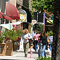

|  |
Main Street at RiversideShopping |
Detail
Main Street Riverside is a charming place to shop. A beautifully landscaped pedestrian walkway is flanked by a collection of one-of-a-kind shops full of carefully chosen merchandise. Whether you are purchasing a special gift for someone else or yourself, there is something for everyone. Along with the shops, you'll find some of the most specialized and delicious restaurants in the Inland Empire. Specializing in the unique, this area is like no other in Riverside.
Downtown Partnership
The Riverside Downtown Partnership works closely with business organizations and government institutions to identify needs to accommodate and strengthen the business climate with strategies and implement programs that will improve the quality of life in Downtown Riverside.
Downtown Riverside - the heart of the city, the perfect place to live, work & play!